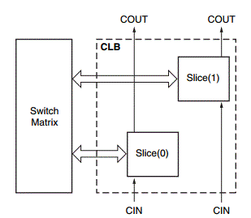
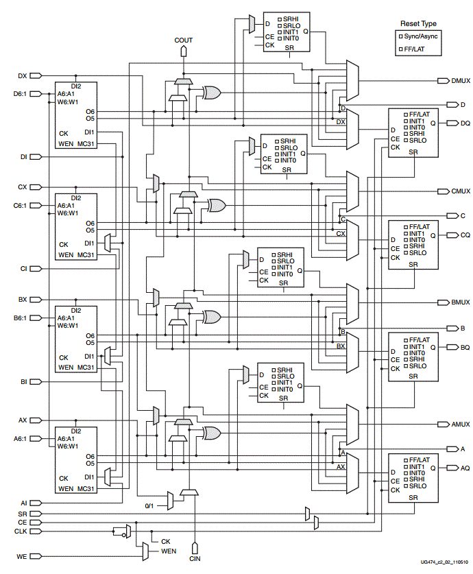
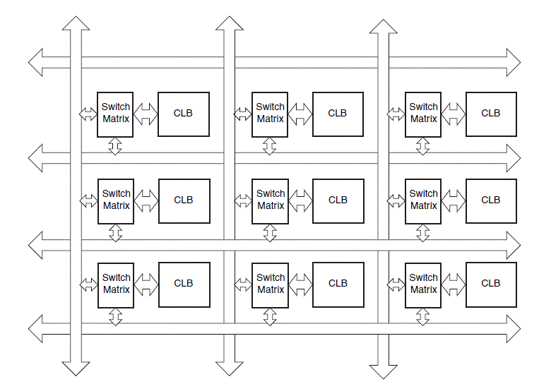
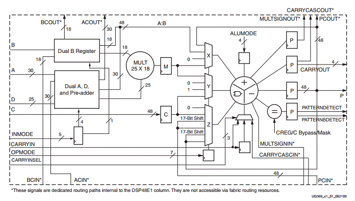

| Date: | April 14 |
| Lecture: | 30 |
| Status: | In Progress |
Xilinx Artix-7 architecture
The Artix-7 FPGA consists of Logic Blocks, Block RAM, DSP blocks,
and a global routing network. We will spend most of our time
discussing the Logic Blocks. But before we do, realize that modern
reconfigurable logic exists because logic designs can easily be expressed in terms of medium
scale logic building blocks such as registers, shift registers,
multiplexers, counters, adders, subtractors, and comparators. Consider
the following output from the Xilinx ISE during the synthesis of Lab 4 on the Spartan-6 FPGA.
=================================================================
HDL Synthesis Report
Macro Statistics
# Multipliers : 1
16x16-bit multiplier : 1
# Adders/Subtractors : 9
13-bit adder : 1
16-bit adder : 1
16-bit addsub : 2
16-bit subtractor : 1
5-bit subtractor : 3
8-bit adder : 1
# Registers : 21
1-bit register : 6
13-bit register : 1
16-bit register : 6
20-bit register : 6
32-bit register : 1
8-bit register : 1
# Comparators : 14
8-bit comparator greater : 2
8-bit comparator lessequal : 12
# Multiplexers : 13
1-bit 2-to-1 multiplexer : 4
1-bit 20-to-1 multiplexer : 3
16-bit 2-to-1 multiplexer : 2
20-bit 2-to-1 multiplexer : 4
# FSMs : 2
=================================================================
ISE decomposed my VHDL design into basic building
blocks. This is one reason we insisted on certain coding
practices throughout the semester - they increase the likelihood that our design will
be efficiently mapped into these basic building blocks. However, consider how the actual FPGA
can be configured to realize these basic building blocks. This complicated process is what the Xilinx software does.
How it does it is explained below.
Logic Blocks
Note: Everything in this section and the following section is derived from the
Xilinx 7-Series Configurable Logic Block (CLB) User Guide.
A configurable logic block (CLB) is a basic block used to implement the logic behind the VHDL designs we have been working on all
semester. In FPGAs, hundreds or thousands of CLBs are laid out in an array (commonly a switch matrix) known as the
global routing network. All of the CLBs on the FPGA are connected to each other. On the Artix-7 (and other Xilinx 7-series boards),
each CLB contains two Logic Slices (discussed in the following section). The logical layout of a CLB can be seen in the Figure below.

Logic Slices
The Artix-7 on our board (Artix-7 7A200T) has a total of 33,650 logic slices (16,825 CLBs).
Each logic slice contains four 6-input LUTs and eight flip-flops. This corresponds to
134,600 total 6-input LUTs.
There are three possible types of logic slices: SLICEM, SLICEL, and SLICEX. However, in the Artix-7,
SLICEX slices are unused; of the 33,650 logic slices, 22,100 are SLICEL and 11,550 are SLICEM.
In the subsequent sections, we will examine the slice with the most features: SLICEM.
A diagram of a SLICEM slice is shown below.

In the diagram above, three major SLICEM subystems can be seen: 1. the four 6-input LUTs, 2. the eight flip-flops, and 3. the fast carry logic.
These subsystems will be discussed in the subsequent sections.
1. Look-up tables
If you need a refresher on how a hardware LUT works, see
this link.
In a SLICEM, there are four 64x1 RAMs which are used to
realize 5 or 6-variable functions; the truth table for the function is
stored in the RAM and the inputs are used as the input addresses. As an example,
let's try to realize a full adder using RAM. In class, we
will derive the truth table for sum and carry and show how they
can be inserted into a LUT. It is important for the further development
of the lecture to point out that sum = a xor b xor c and that you can
represent cout = ((a xor b) and cin) or (a and b) This last form is
pretty nutty, but is also very useful, as we will see in a moment.
2. Flip Flops
There are 8 flip flops in each logic slice. Answer the following questions:
- Where does the data input come from?
- How are the slices clocked?
- How are the slices initialized?
- Where are the slices' outputs sent?
3. Fast Carry Logic
The fast carry logic is designed explicitly to realize a variation
of a carry look-ahead adder. Consider the construction of a 4-bit
adder with inputs A=a3,a2,a1,a0 , B=b3,b2,b1,b0 , and a carry in c0.
Each slice of the adder can either generate a carry bit or
propagate its carry in to the carry out.
- Propagate -- pi is equal to 1 when the inputs to a bit slice are such
that any carry in will be propagated.
- Generate -- gi is equal to 1 when the inputs to a bit slice are
such that a cay will be generated.
We can represent the cout of a slice as cout = g + p*cin. This arrangement
is effectively what is happening in the carry logic block in the middle of
each logic slice.
Interconnect
A logical figure of how the CLBs on the Artix-7 are interconnected to each other can be seen in the Figure below (taken from Spartan-6 documentation).

Source:
"Spartan-6 FPGA Configurable Logic Block User's Guide",
page 37, Figure 29
DSP Slice
Apart from the slices which make up the CLBs discussed above, the Artix-7 also contains DSP slices. The Artix-7 we are using contains 700 DSP48E1 slices.
Each DSP48E1 slice contains a pre-adder, a 25 x 18 multiplier, an adder, and an accumulator. A picture of a DSP slice can be seen in the Figure below.

Source:
Xilinx 7 Series DSP48E1 Slice User Guide